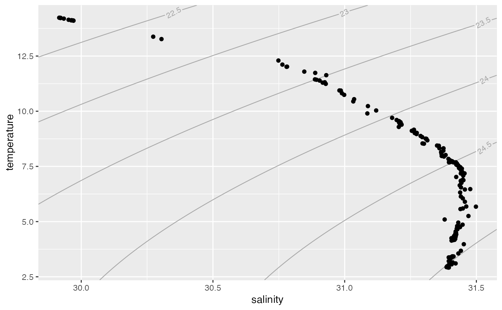

Draws density contour lines ("isopycnals") as a ggplot2 layer.
geom_isopycnal( mapping = NULL, data = NULL, ..., lineend = "butt", linejoin = "round", linemitre = 10, colour = "darkgray", size = 0.4, linetype = 1, alpha = NA, text.size = 3, family = "", salinity_type = c("practical", "absolute"), temperature_type = c("in-situ", "conservative"), ref_pressure = 0, ref_longitude = NULL, ref_latitude = NULL, trim_freezing = TRUE, breaks = pretty, n_breaks = 5, n_sal = 200, n_temp = 200, eos = getOption("oceEOS", default = "gsw"), na.rm = FALSE, show.legend = NA, inherit.aes = TRUE ) GeomIsopycnal
| mapping | Set of aesthetic mappings created by |
|---|---|
| data | The data to be displayed in this layer. There are three options: If A A |
| ... | Other arguments passed on to |
| lineend, linejoin, linemitre, colour, size, linetype, alpha | Customize
the appearance of contour lines. See |
| text.size, family | Customize the appearance of contour line labels.
See |
| salinity_type | A salinity value. Use
|
| temperature_type | A temperature value. Use
|
| ref_pressure | The pressure that should be used to calculate density contours in dbar. |
| ref_longitude | The latitude and longitude that should
be used in seawater calculations if |
| ref_latitude | The latitude and longitude that should
be used in seawater calculations if |
| trim_freezing | Don't draw contours outside the freezing region. |
| breaks | A numeric vector or function used to generate breaks from objects. |
| n_breaks | Passed to |
| n_sal | Number of points with which contours should be approximated on the salinity axis. |
| n_temp | Number of points with which contours should be approximated on the temperature axis. |
| eos | The equation of state: one of "unesco" or "gsw". See
|
| na.rm | If |
| show.legend | logical. Should this layer be included in the legends?
|
| inherit.aes | If |
An object of class GeomIsopycnal (inherits from Geom, ggproto, gg) of length 5.
library(ggplot2) data(ctd, package = "oce") ggplot(ctd, aes(salinity, temperature)) + geom_isopycnal() + geom_point()